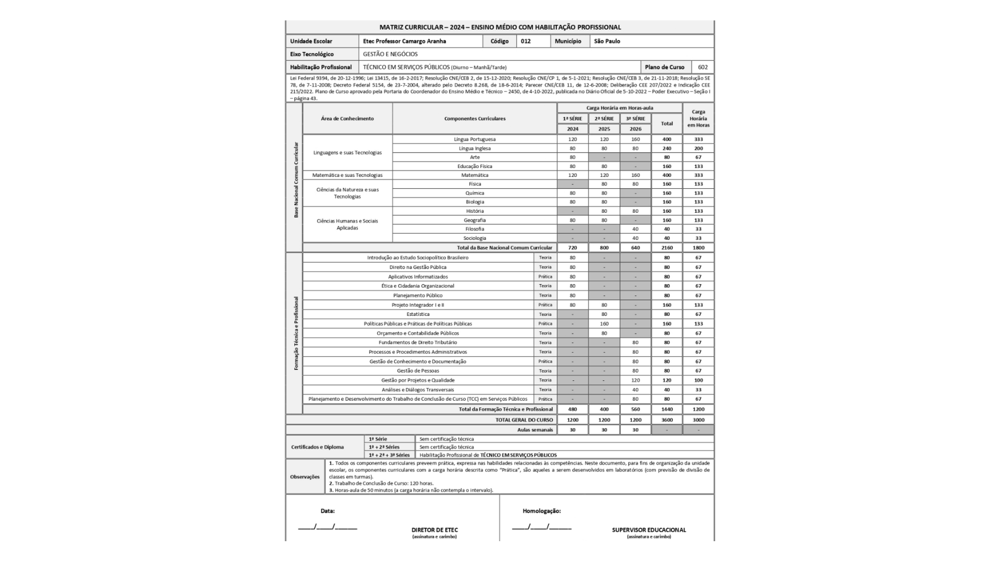

CURSO
Técnico em Serviços Publicos
O curso de Serviços Públicos tem como objetivo formar profissionais preparados para atuar na gestão e no atendimento das demandas da população em órgãos governamentais e instituições públicas. Nele, o estudante desenvolve conhecimentos sobre administração, legislação, políticas públicas e práticas de cidadania, aprendendo a lidar com processos burocráticos e a promover um serviço de qualidade à comunidade. É uma área voltada para quem deseja contribuir diretamente com o funcionamento do setor público e com o bem-estar social.
METODOLOGIA
A metodologia do curso une teoria e prática, com estudos de caso e projetos, preparando o aluno para atuar com ética e eficiência.
MERCADO DE TRABALHO
O técnico em Serviços Públicos atua na administração pública, auxiliando na gestão e implementação de políticas públicas.
MOTIVOS PARA ESCOLHA
Estudar na Etec Camargo Aranha é unir teoria e prática e se preparar para atuar eticamente no setor público.
AULAS
As aulas combinam teoria, prática e projetos para formar profissionais críticos e capacitados para o setor público.
FAIXA SALARIAL
A remuneração inicial varia de R$ 1.689,27 a R$ 2.954,55, conforme o porte da instituição e a região, com oportunidades de crescimento.
DISPONIBILIDADE
O curso está disponível para novas turmas conforme o calendário oficial da instituição.
Matriz curricular

BASE LEGAL
Fundamentado na LDB e nas normas do Conselho Estadual de Educação de SP, garantindo qualidade e relevância.
CERTIFICADOS OBTIDOS
O curso concede certificado reconhecido pelo MEC, com possibilidade de certificados complementares.
REGISTRO PROFISSIONAL
O técnico pode atuar em órgãos públicos, com ingresso via concurso, sem necessidade de conselho profissional.
APROVEITAMENTO DE ESTUDOS
O curso técnico em Serviços Públicos da Etec Camargo Aranha permite que alunos com conhecimentos prévios solicitem, no ato da matrícula, a análise curricular para aproveitamento de estudos. Componentes obrigatórios do curso deverão ser cursados por todos, garantindo a formação completa e padronizada do técnico.
CONCLUSÃO
A conclusão do curso técnico em Serviços Públicos da Etec Camargo Aranha requer a aprovação em todas as disciplinas do currículo, a realização de atividades complementares e a entrega de um trabalho de conclusão de curso, garantindo que o aluno esteja plenamente capacitado para atuar no setor público.